The interactive guide
Every fish has a character — some mild and gentle, some bold and rich. Learn them like a Shimoni fisherman, and never buy the wrong fish again.
01 · How will you cook it?
02 · What taste do you love?
03 · Your budget per kg?
Tap the filters to explore by character. Meters show taste strength, firmness, and natural oils — the three things that decide how a fish should be cooked.
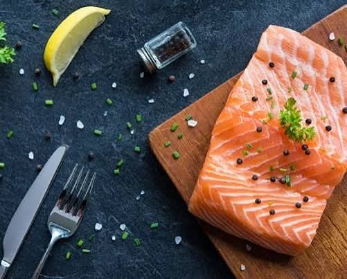
Rich taste · firm texture · very oily. Best for grilling and steaks or raw and frying.
Rich, buttery and full of omega-3. The one fish here our boats don't catch.
KES 6,000 / kg See this fish →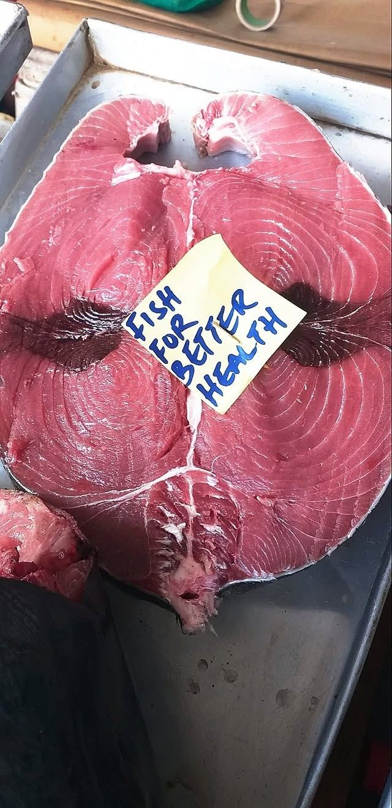
Rich taste · very firm texture · medium oil. Best for grilling and steaks or raw and frying.
The best seller. Deep red steaks — sear hot and fast, never overcook.
KES 1,000 / kg See this fish →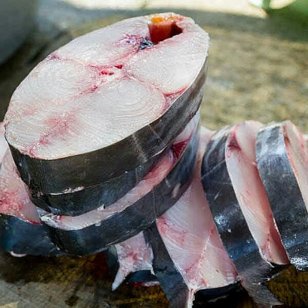
Rich taste · very firm texture · medium oil. Best for grilling and frying and curry.
Pride of the coast. The classic biryani fish — chunks hold together.
KES 1,200 / kg See this fish →
Mild taste · medium texture · lean. Best for frying and grilling and curry.
The family favourite — few bones, star of samaki wa kupaka.
KES 700 / kg See this fish →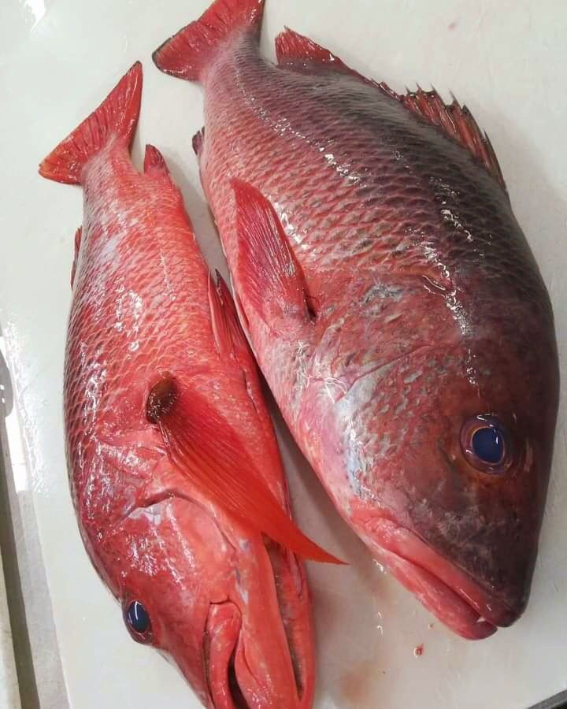
Mild taste · firm texture · lean. Best for grilling and frying.
Restaurant favourite worldwide — shines with simple seasoning.
KES 700 / kg See this fish →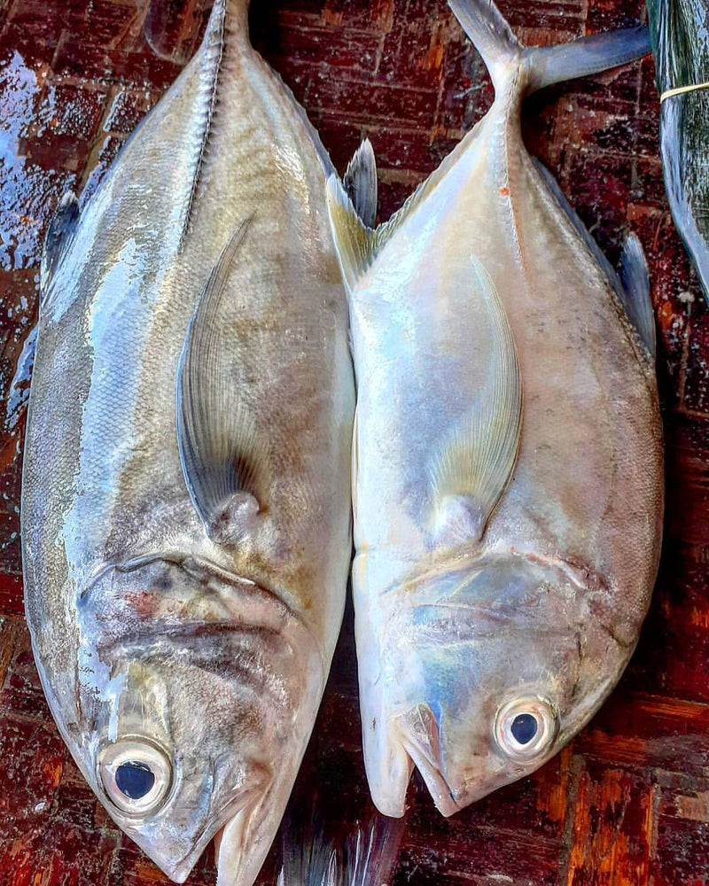
Rich taste · firm texture · medium oil. Best for frying and grilling and curry.
Stands up to bold seasoning — a fish with muscle.
KES 700 / kg See this fish →
Mild taste · medium texture · very lean. Best for curry and frying.
White and flaky — the mchuzi wa samaki (fish curry) classic.
KES 600 / kg See this fish →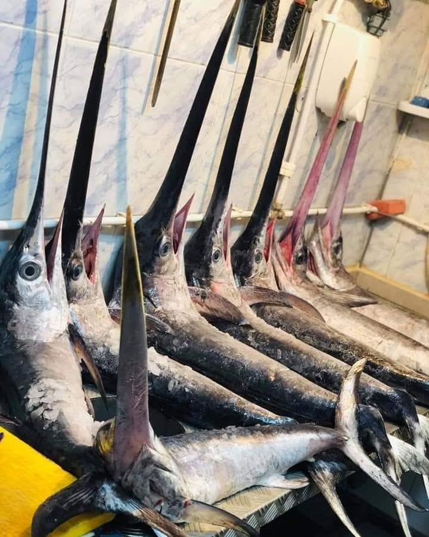
Rich taste · firm texture · lean. Best for grilling and steaks or raw.
Big-game fish — bold steaks, excellent smoked.
KES 800 / kg See this fish →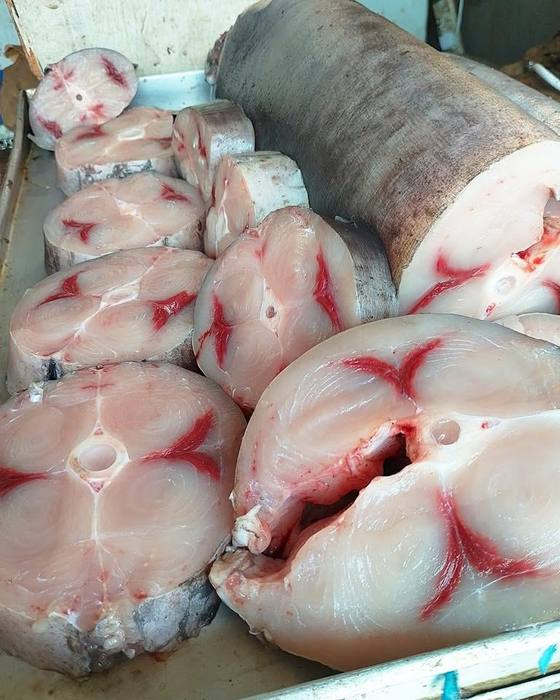
Medium taste · very firm texture · lean. Best for grilling and steaks or raw.
King of the BBQ — famously forgiving over hot coals.
KES 800 / kg See this fish →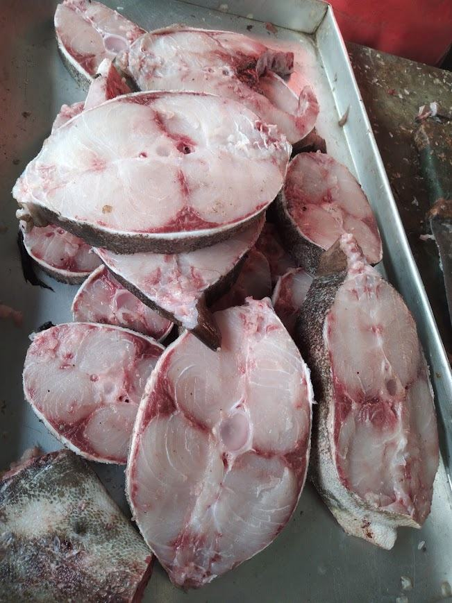
Medium taste · very firm texture · lean. Best for grilling and frying and steaks or raw.
Tuna's texture, gentler taste — great first 'steak fish'.
KES 800 / kg See this fish →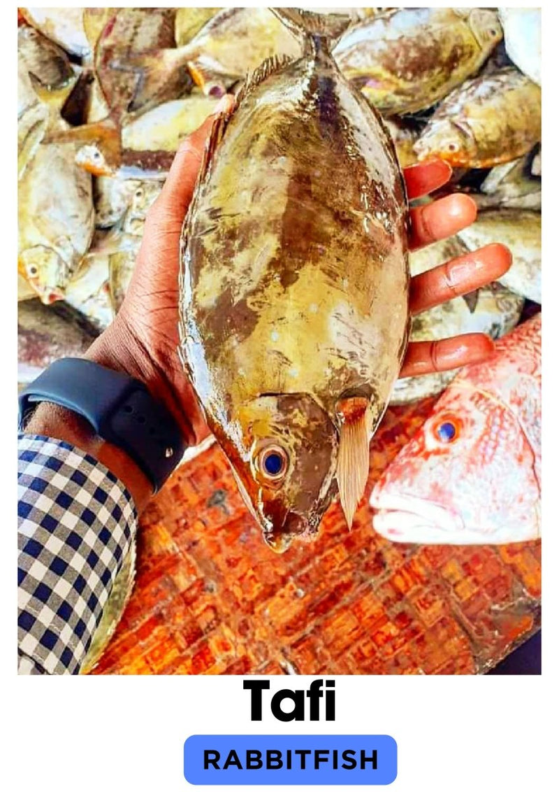
Mild taste · tender texture · lean. Best for frying and grilling.
Delicate and sweet — deep-fry whole with ugali or coconut rice.
KES 700 / kg See this fish →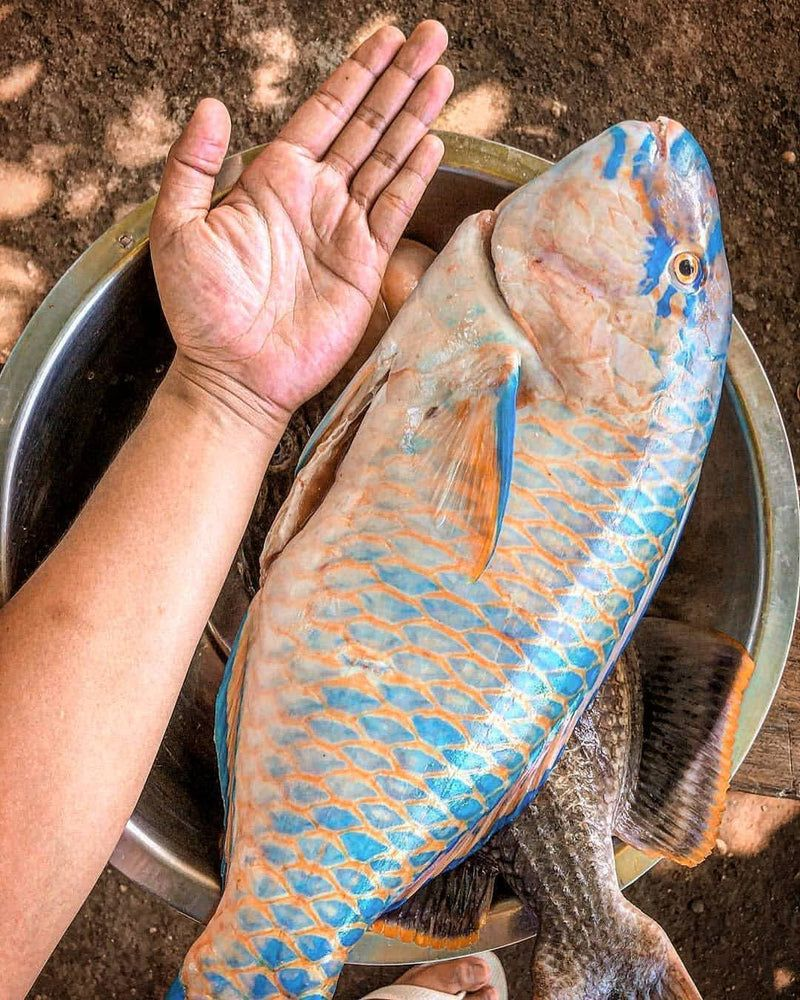
Mild taste · tender texture · very lean. Best for frying and curry.
Tender and gently sweet — lovely in coconut sauces.
KES 600 / kg See this fish →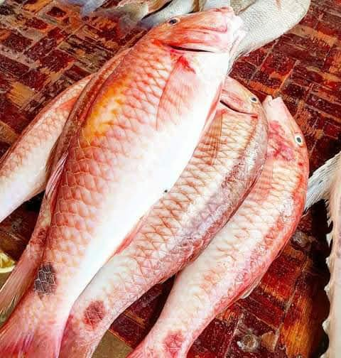
Medium taste · tender texture · lean. Best for frying and grilling.
Subtly sweet, distinctive — best fried whole.
KES 700 / kg See this fish →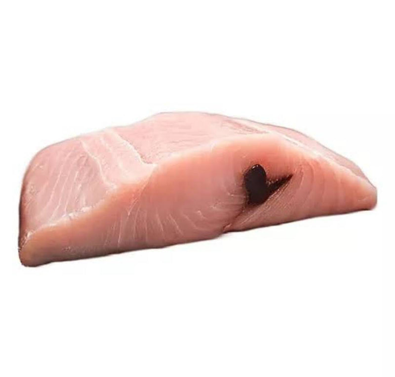
Medium taste · very firm texture · lean. Best for frying and curry.
Dense, boneless, distinctive — a traditional coastal staple.
KES 700 / kg See this fish →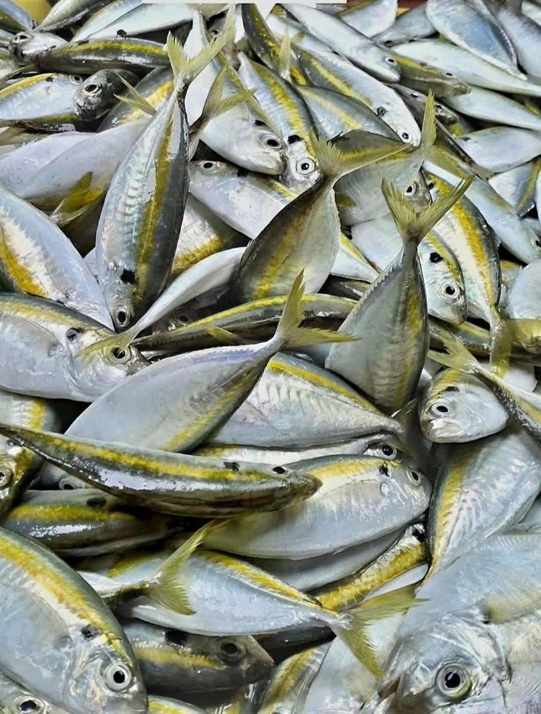
Rich taste · medium texture · very oily. Best for frying and grilling and curry.
Rich natural oils — big flavour at a friendly price.
KES 600 / kg See this fish →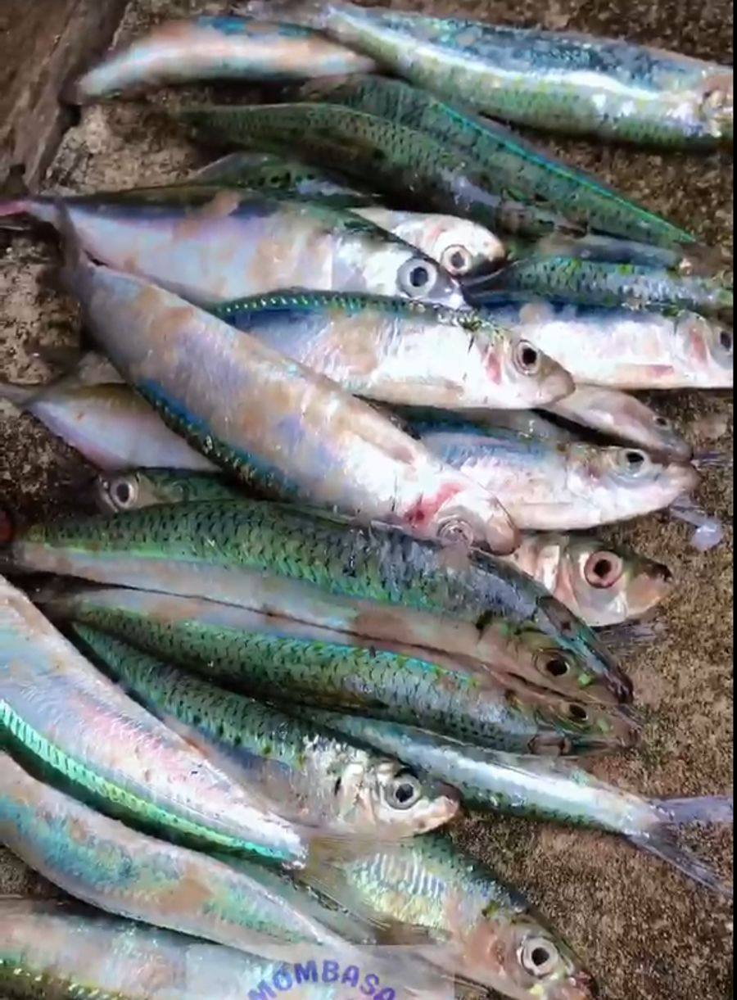
Rich taste · tender texture · very oily. Best for frying and grilling.
Omega-3 champions — crispy-fry and eat them fresh.
KES 600 / kg See this fish →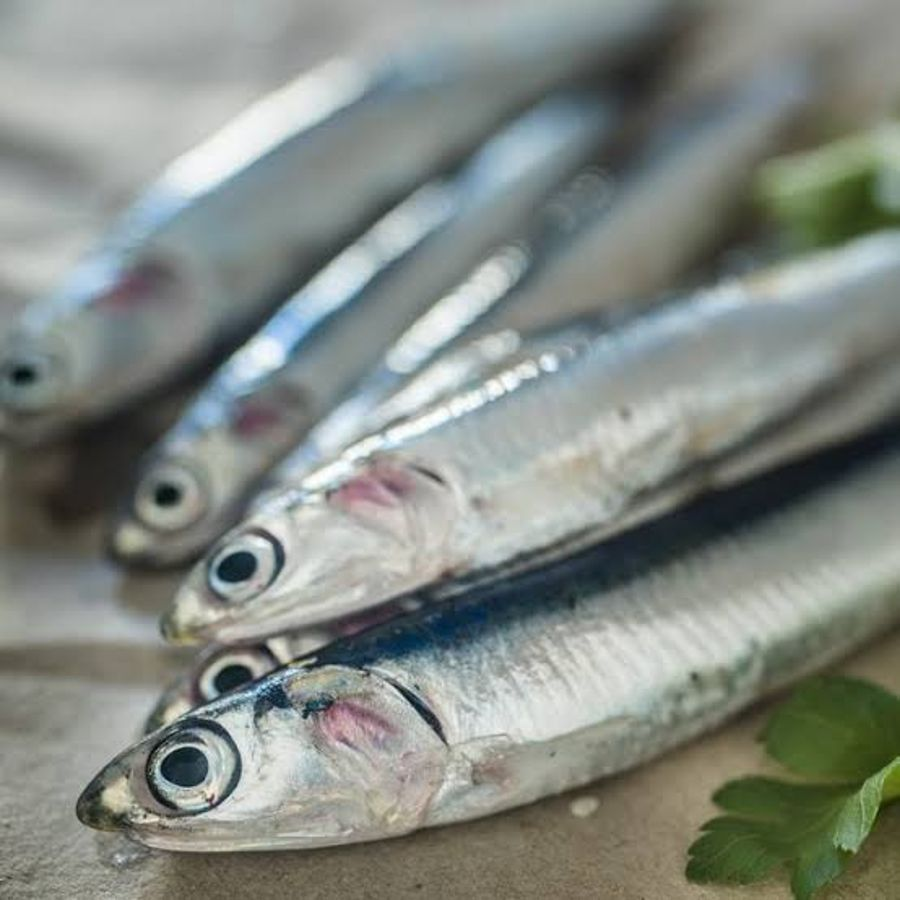
Very rich taste · soft texture · oily. Best for frying.
Tiny fish, mighty flavour — lifts everyday dishes.
KES 600 / kg See this fish →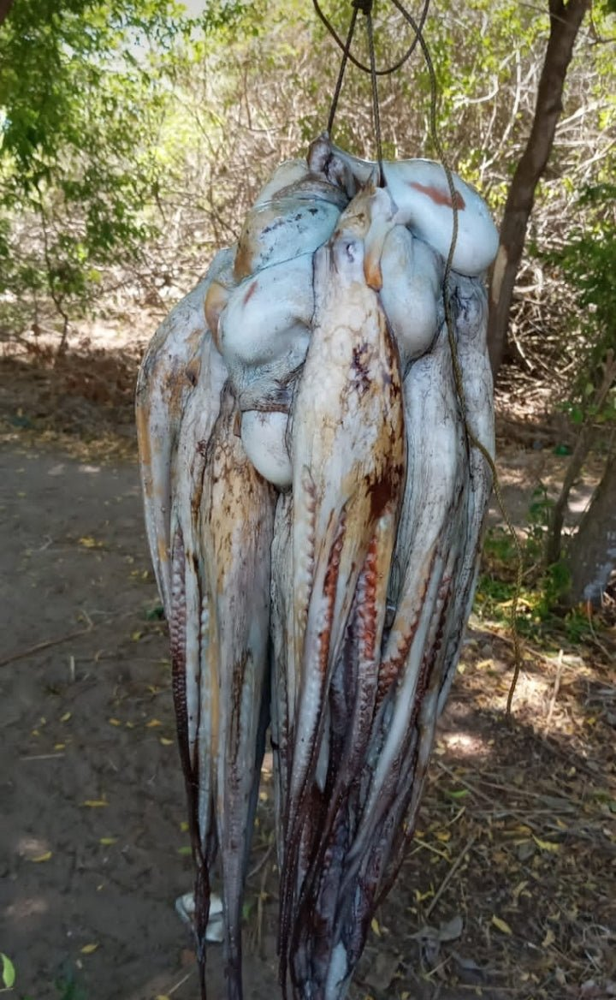
Medium taste · very firm texture · very lean. Best for curry and grilling.
The legend — pweza wa nazi. Slow-cook until fork-soft.
KES 1,000 / kg See this fish →
Mild taste · medium texture · very lean. Best for frying and curry.
Cook fast and hot, or slow and gentle — nothing in between.
KES 1,200 / kg See this fish →